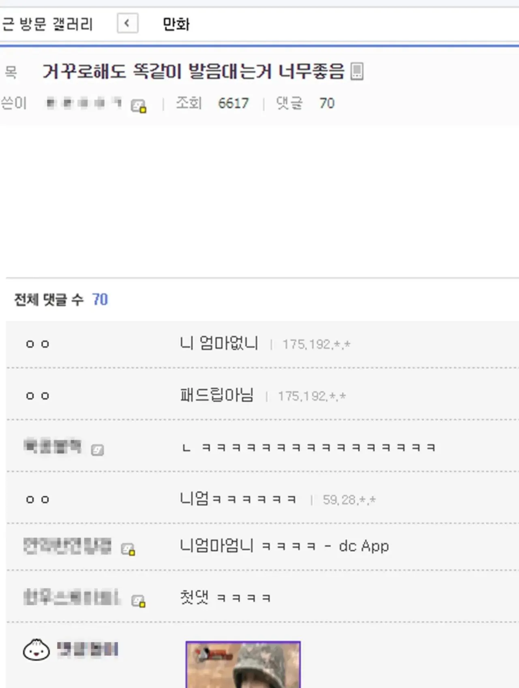

55 · 25 · 4 시간 전 · 원문

수집 당시 댓글 25개
참룡객 · 19 시간 전
우영우정도 생각했는데
↳ 답글 · AllOfMe · 4 시간 전
소주반병만주소
평택슬릭백 · 19 시간 전
타조똥조타
↳ 답글 · 깨어있음 · 12 시간 전
더러운새기
↳ 답글 · 연골어류 · 12 시간 전
avocado · 5 시간 전
아좋다좋아 수박이박수
↳ 답글 · 황금물고기 · 5 시간 전
다시 합창합 시다
↳ 답글 · 쉐프큐 · 5 시간 전
로꾸꺼 로꾸거 로꾸꺼
콩냉이순장고 · 5 시간 전
시발ㅋㅋㅋㅋ
GugugagaDoro · 5 시간 전
개똥아똥쌌니아니오
↳ 답글 · XiJinPink · 4 시간 전
라팔아팔렸니아니오
↳ 답글 · 아이씨발 · 4 시간 전
강원도원주시도시락
질병계 · 5 시간 전
친근한 근친
감귤온천 · 5 시간 전
다시 합창합시다
칡쇼 · 5 시간 전
양드립 · 4 시간 전
서지수지나서수서역
네엉덩이에박아주고싶어 · 4 시간 전
이효리
사랑방창식이 · 4 시간 전
일론머스켓 · 4 시간 전
열무김치김무열
ㅋㅋㅋㅋ
↳ 답글 · 미녀와야스 · 3 시간 전
ㅋㅋㅋㅋㅋㅋㅋ
↳ 답글 · cm만더크고싶다 · 2 시간 전
ㅋㅋㅋㅋㅋㅋㅋㅋㅋㅋ
↳ 답글 · 쌕돌 · 44 분 전
이게 제일 웃겼다ㅋㅋㅋㅋ
냥냥E차냥 · 2 시간 전
미어캣 어미
고모고모부총난사 · 3 분 전
니애미 애니
우영우정도 생각했는데